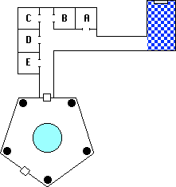
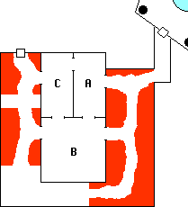
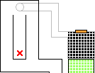

he freshly Undead Dretch with a crooked
head shambled slowly out of view. Attempts to scry through the arch using
Far Sight, Listen, and similar spells uniformly failed. Mystical cast
Intangible Form on herself, but was unable to pass through the gate
in that state. After much gnashing of teeth, the adventurers determined that the
only workable plan was to cast defensive spells and charge through to face
whatever had decapitated poor Odie (as they had nicknamed the Dretch).
he freshly Undead Dretch with a crooked
head shambled slowly out of view. Attempts to scry through the arch using
Far Sight, Listen, and similar spells uniformly failed. Mystical cast
Intangible Form on herself, but was unable to pass through the gate
in that state. After much gnashing of teeth, the adventurers determined that the
only workable plan was to cast defensive spells and charge through to face
whatever had decapitated poor Odie (as they had nicknamed the Dretch).
Fineas attempted to use Dispel Essence to dissolve the
Wall of Fire separating the party from Zem and the demon. Unable to
concentrate due to the stench of the place, this spell was poorly cast. An
Elvish brain is made up of equal parts tissue and magic. The Dispel
mistakenly began to break down these magical bonds within Fineas rather than
the intended target, which would have turned the elven mage into a blithering
idiot had not he realized the error to refocus the spell. The Wall of
Fire was dispelled. [Editor's note: Fineas open-ended the spell fumble,
which would have been catastrophic had he not used a Fate point to reroll].
Zem pressed the attack, using Death Strike to good effect.
His sword struck deep, severing an artery in the demon's neck. Blood gushed
forth and the beastie crumpled to the ground. In an ostentatious display of
munchkinism Zem continued the slashing motion around behind his back,
decapitating the undead Dretch without even looking.
The body of the Hezrou was quickly chopped into pieces and thrown into the misty gateway before it had a chance to animate as an Undead. A hallway led away from the room. Rosvenir cast Presence, finding one within range which Mind Typing identified as a 50th level demon.
Mystical

The gate had deposited us in the center of the blue tiled room. There
was a mist filled archway on the opposite wall, which we ignored. The hallway
led one hundred feet or more away from the room. I was tired of being ambushed
by demons, so I let a Fireball explore it for us. There were five
bedrooms at the end of the hall. They hadn't been used in a long time, and all
of the contents had fallen to ruin. The fireball set some of it on fire,
cleansing it nicely.
Haer rooted around in one room and found a potion of some sort. In
another Zem found a valuable ring and a magic quarterstaff. Then a statue came
to life to attack. I cast Barrier Pit, which opened into the black oily
stuff of the Negative Material Plane. The statue fell in and was swallowed up.
[Editor's note: the potion of Greater Far Sense was in room A, and the
quarterstaff +50 was in room C]
We continued down the hallway until it ended in a door. Meilu was
using Stonesight, and could see a pentagonal room beyond. In the center
of the chamber was a nightmarish creature trapped inside some sort of crystal
cylinder. We opened the door. Even crammed up as it was, I could recognize the
demon. It was a Balor, the mightiest of the tanarr'ii.
The Narrator
The Balor was confined in a transparent crystal prison
approximately five feet in diameter, extending floor to ceiling. The demon
noticed the adventurers immediately, and called out to them: "Primes, I
beseech your help! Quickly, before my son becomes aware of your penetration!
Release me, and I will help you defeat him. I give one of you temporary leave
to take up my sword, there on the shelf, and shatter this most accursed of
containment vessels!" The Balor presumably was Tarnhem, the Tanarr'ii mentioned in Desatysso's journal as the father of
Acerak and the source of much of his power. He promised to return them to the
Prime once his son was dispatched, and after some questioning the adventurers
believed this. A huge sword lay on one of the shelves.
Zembahk Kaydian
The sword was a massive armament, appearing as a free standing
lightning bolt. Generally it is not a good idea to handle the personal weapon
of extra planar entities of such power, yet the Balor obviously desired to be
freed. One can only imagine the fate in store for one bold enough to take it
up without permission. The weapon was surprisingly light for its size. Perhaps
it was indeed made of light made solid.
I approached the cage. The sword on my back was obviously
displeased at my use of a rival weapon, but for once made no attempt to
interfere. I brought the sword around in an overhand arc, smashing the
prison in a single blow. Shards of crystal showered the room. I fared well,
but the lesser beings who are my travelling companions received various
lacerations from the shrapnel.
Early draft of the RTOH Screenplay 956 INT -- INTERIOR OF FORTRESS -- INDETERMINATE TIME The Balor rises majestically from the remnants of its cage. Spreading its mighty wings the demon stretches, muscles bulging out everywhere. Its visage is terrible [[ see if we can get something secondhand from the Creature Shop for this ]]. The halfling Haer Gronagin turns and runs back down the hall in abject terror. Suddenly a Winter Wight appears near the Balor. Acerak: (to our heroes) Your ingenuity surprises me; your reward awaits you at the Hub. Acerak: (to Tarnhem) As for you, father, your usefulness is at an end!
The Winter Wight raised its arms, sending powerful magical energy at the Balor[[ Special effects budget ran out halfway through production ]] The Winter Wight claws at the great demon, and the black flame begins to spread but then mysteriously sputters out. The mighty Balor is far too powerful for such trifles as Black Fire. Zem tosses the lightning sword, which flies unerringly to the waiting hand of the Balor. Tarnhem, obviously enjoying the heft of the sword in his hands, strikes a mighty blow against the Wight. The undead staggers back, recovers, and lashes out at Tarnhem a second time. The Black Fire begins to spread across the massive shoulders of the tanarr'ii, but is once again extinguished. [[ Cost savings: only shoot the Black Fire once from two different camera angles. Who's gonna know? ]]
The Narrator
The combat lasted only two rounds before the lightning blade clove
Acerak in twain. Raising his head to the heavens to release a tremendous roar,
Tarnhem cried "Free at last!" Then the Balor disappeared. He had
neglected the part of the bargain about helping the adventurers get back to
the Prime.
However, the party took very little notice of
the outcome, as something had happened to Endira. Her natural attractiveness
had been... enhanced, and her appearance was now nothing short of breathtaking
to the males. Fineas and Zem were enthralled by her allure, and very nearly
came to blows to possess her. Suspecting the effects of magic, Meilu cast
Dispel Essence. The supernatural jealousy possessing Zem and Fineas
dissipated.
No sooner had this effect faded when Kahlen felt incredible pain in
her midsection, falling to the floor in agony. Rosvenir bent down to help
her, which placed him exactly at the detonation point of some sort of
violent concussive force. Rosvenir was thrown backwards while Kahlen skidded
several feet along the ground. Both were lucky that the force had not thrown
them into the stone walls, which would have crushed their ribcage and caused
their deaths in 5 rounds [Editor's note: Rosvenir and Kahlen each used a
Fate point to avoid death from the E Impact criticals.]
Then the lights went out. All of them, including the Projected
Light which Rosvenir had invoked. Obviously, this was a magical darkness.
Meilu attempted to cast a second Dispel Essence but fumbled, mistakenly
casting See Invisible instead.
Zem cast Realm Protection Sphere, which enveloped the party
in a magical shield to impede further magics from affecting them. Mystical
crawled in the darkness to Kahlen, who was still writhing in pain. Mystical's
attempt to cast an Arcane Healing spell went horribly awry, and she mistakenly
cast a Fireball point blank at Kahlen's face. Fortunately the
Fireball was cancelled by Zem's Realm Protection Sphere and no
harm came of it. Mystical then cast a spell of healing on Kahlen. Rosvenir
used Utterlight to counteract the magical darkness.
As suddenly as they began, the magical attacks ended.
Haer Gronagin had disappeared during the ruckus, running away when
the Balor emerged from its prison. Rosvenir cast Finding, but could not
locate him. Others searched the bedrooms and hallways looking for the
halfling, to no avail.
Zem examined the shelves in the pentagonal room finding two
interesting books, one tattered and one pristine. He opened the sturdier of
the two, and felt a rush of adrenaline as it disappeared. [Editor's note:
It was a Manual of Gainful Exercise which increased Zem's Co stat by 1]
Rosvenir found a box of strange berries on another shelf. Being interested in
lore rather more than roughage, he tossed them over his shoulder. The
resulting explosion injured Zem, Endira, and Rosvenir.
The crystal shrapnel had badly injured Fineas, the magical attacks
during the mighty battle had taken their toll, and the exploding berries
proved the limit. The party set up camp to rest and recuperate. Kahlen's pain
had faded, and she cast a number of spells of healing before giving in to
sleep.
Rosvenir cast Commune, asking: "Is Haer still
alive?" The answer was a simple "Yes." Rosvenir then cast
Dream IV to know of these things:
Rosvenir's Dream
Running through a County Fair, as a child 7,000 years ago...
playing games, wandering around... there is an archway filled with mist in the
center of the fairground... Go through the arch, one side leads to the first
room in the Fortress of Conclusion, the other to the room with black tiles...
Move up, up into the distance, until can see the entire map of the Fortress...
See Haer running around, moving from one part of the Fortress to another...
Haer hops up and down like in a game of Whack a Mole... he keeps jumping up,
yet never manage to hit him... Finally Haer opens a hole in the floor of the
Fortress, and begins to dig... The map disappears, and the Devourer's
phylactery glows into view... a whispered "kindle" activates the
Wand of Days...
Day 31
Mystical checked for traps on the further door from the pentagonal
room. Low, disturbing moans could be heard beyond. These emanated from a wide
room at the end of the hall in which lay scattered a bloated, writhing mass of
Undead body parts, mostly humanoid mixed with the occasional animal or
monster. This was the Wall Of Swarming Mutated Undead, or W.O.S.M.U. for
short, and a cleared path ran through it to each of three doorways.

Zem cast Holy Aura and stepped experimentally upon the cleared
path, making it halfway across the room before the W.O.S.M.U. suddenly swarmed
together and fell inwards to crush him. Zem could feel the life being squeezed
from his body, as it would have had he not used a Fate point to reroll the
"E" critical he sustained. Even so he was pinned and unable to move.
Mystical quickly cast Telekineses True, a powerful version of the spell
with the strength to pull Zem free. The Holy Aura caused the W.O.S.M.U.
to break apart into smaller pieces, but did not weaken it in the slightest.
Mystical managed to pull Zem back to the relative safety of the hallway.
Rosvenir
The W.O.S.M.U. seemed limited to ground level, so I cast Fly
to float out into the room. The mass quivered and writhed beneath my feet, but
the bones and limbs couldn't find an arrangement stable enough to reach me. I
flew across the W.O.S.M.U. and through the closest doorway.
The first room I explored contained a number of stone benches with
wooden shelves lining the walls. All were absolutely packed to capacity with
boxes and bottles and containers of all sorts of magical components and
materials. There were liquids, solids, and gasses, some which glow and others
which repel the light. Some contained specimens which moved as though still
alive, while others floated eerily in preservative liquids. [Editor's note:
this is room A on the inset map.]
The second and larger room was like a dream come true. It was
completely filled with crystalline bookshelves, packed tight with barely
enough room to slide between. The tomes resting on these shelves covered a
vast array of topics from the sublime to the grotesque. Most were shod in
metal, some rusted and some shiny, and labelled in a variety of tongues. The
shelves glowed softly, providing the perfect light by which to read. Curse
the luck which removed the halfling and his bag of holding at precisely the
wrong time, or the entire collection might already be preserved. [Editor's
note: this is room B on the inset map.]
The final room was a laboratory of some sort, dominated by a
roughly man sized black metallic capsule in the center. The capsule canted at
a 45 degree angle to the floor, and its top nearly touched a huge black
crystal set in the ceiling directly above. The walls of the room were covered
in vellum sheets densely inscribed with humanoid anatomical illustrations.
Other pages contained images of concentric spheres in various colors, which
resembled planar diagrams. I noted that the innermost sphere was always pitch
black. This will bear further study, I suspect, when we return to the Prime.
[Editor's note: this is room C on the inset map.]
The Narrator
Rosvenir flew back across the W.O.S.M.U. to rejoin the group. Haer
Gronagin had not been seen since the previous day, and Kahlen (who had known
him for over twenty years) insisted that a search be mounted. Rosvenir's
Finding spell could not locate the halfling, and a repeat search of the
area turned up no clues. Returning to the archway found it filled once again
with mist, the stones softly glowing. Mystical touched the stones, clearing
the arch and showing an image of the black tiled room at the other end.
Rosvenir and Mystical elected to go through. The floor of the black tiled room
looked strange, so the two went through with active Fly spells. The
floor was gone, exposing the oily blackness beyond. The arch though which they
had passed was filled from mist from the far side. Rosvenir touched the stones
to clear it, ensuring that they could return later.

Once through the gate Rosvenir cast Finding to locate the
halfling. The spell placed Haer at approximately the location where the stone gargoyle had stood. Rosvenir's
Presence spell found seven sentient beings, which was odd in that there
had not been that many when they left this area the previous day. The two
adventurers crept down the tunnel to the trap door. Propping it open slightly,
they called out to Haer but received no response. Mystical cast Intangible
Form, and Rosvenir flung the trap door open. Attracted by the noise, a
Vrock demon had positioned itself immediately above the door. When Rosvenir's
head obligingly popped up the demon played Whack A Mage. Rosvenir fell back
into the tunnel as Mystical cast Rapid Gravity Shifts to fling the
demon away.